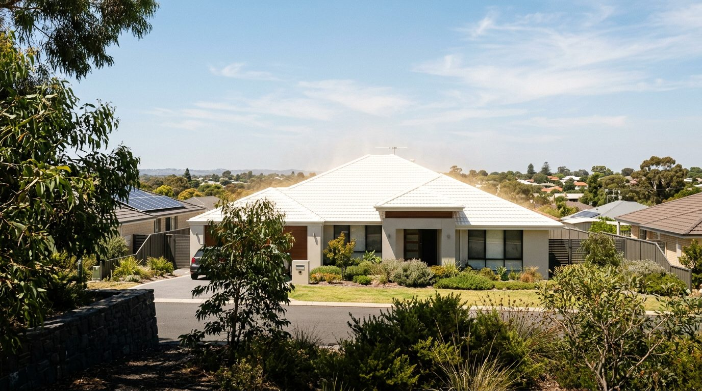
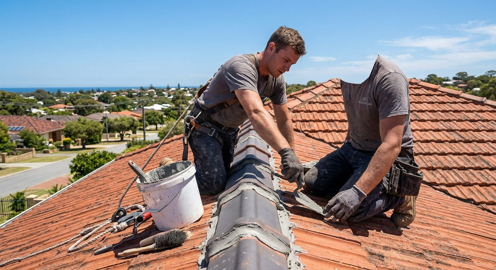
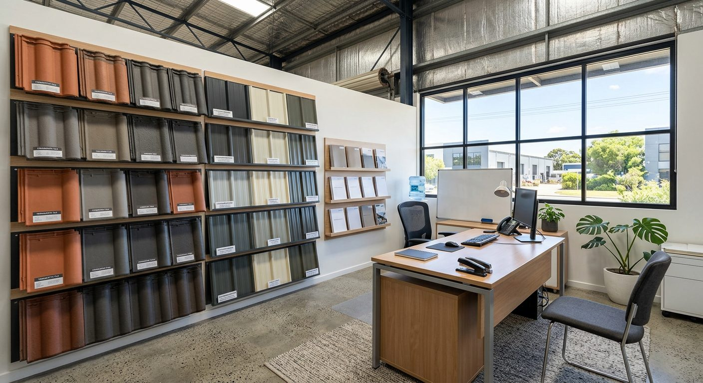

Perth roof restoration built for the WA climate.
25 years restoring Perth roofs with heat-reflective coatings, plus a 10-year guarantee on products and workmanship.
Showroom at 9/73 Walters Dr, Osborne Park
Mon–Fri, 8am–4pm

Representative image — a light heat-reflective roof coating on a Perth home.
Trusted across Perth
25 yearsin WA 10-year guarantee
products & workmanship Osborne Park
showroom
01 / Services
Care for the surface, and the details beneath it.
From reflective coatings to cracked tiles and faded Colorbond, every part of the roof is handled by the one team.
Heat-reflective coatings & painting
Eco-friendly, heat-reflective roof coatings and roof painting made for Perth summers.
View service → 02 — TILESTile roof restoration
Cracked tile replacement, ridge capping re-bedding and repointing.
View service → 03 — REPAIRSRoof repairs & maintenance
Repairs and ongoing maintenance to keep a roof sound year after year.
View service → 04 — DRAINAGEColorbond gutters & downpipes
New Colorbond gutters and downpipes to carry winter rain away cleanly.
View service → 05 — METAL ROOFSColorbond & tin roof re-coating
Re-coating for faded Colorbond or tin roofs.
View service → 06 — FEATUREWhy heat-reflective?
How a reflective coating suits the WA climate, explained plainly.
Read more →02 / Why Climate
An established local firm, not a one-off crew.
25 years in WA
A quarter of a century restoring roofs under the Western Australian sun.
10-year guarantee
Products and workmanship are both covered for ten years. See the guarantee →
A showroom you can visit
See colours and talk to the office team at 9/73 Walters Dr, Osborne Park.
A named team
Steve, Donna, Dean, Damon and Garry — the people you deal with from quote to clean-up.
03 / A clear process
A measured way to begin.
Every roof is different, so the right next step depends on the roof itself.
Call or visit the showroom
Ring (08) 9443 2820 or drop into Osborne Park and tell the office about your roof.
Roof inspection
The team looks over tiles, ridge capping, valleys, metal sheeting and gutters.
Clear scope and colour choice
Agree the work, and pick a colour — even one to match your fencing and gutters.
Restore, coat and clean up
Repairs first, then cleaning, sealing and coating, finished with a tidy site.
04 / In their words
“No mess to be found anywhere.”
Steve did a thorough job of replacing all my broken tiles, repaired my ridge capping and spray painted the tiles in the colour that matched my fencing and gutters… I was really impressed and very pleased with the finished result.
Can not fault this company… Roof capping was removed and reset to a high standard, valleys were replaced, chipped and cracked replaced. Roof cleaned and painted and sealed. When job was finished no mess to be found anywhere.
Super impressed with the roof restoration — cracked tile replacement and an awesome paint job… The same day he finished the painting I had a very positive comments from a neighbours.
05 / Service area
Perth metro, from Osborne Park.
Stirling, Scarborough, Innaloo, Doubleview, Churchlands, Wembley, Subiaco, Nedlands, Morley, Dianella, Balcatta, Karrinyup, Joondalup, Fremantle and suburbs between.
Get in touch
Have a roof in mind?
Call the office or request a call back. Donna will book a time for the team to take a look.
Five services, one roof, one team.
Coatings, tiles, repairs, gutters and metal roofs — every part handled together, under one 10-year guarantee on products and workmanship.
Heat-reflective coatings & painting
Eco-friendly coatings that reflect the sun, applied after a full clean and repair.
View service → 02 — TILESTile roof restoration
Cracked and broken tiles replaced, ridge capping re-bedded and repointed.
View service → 03 — REPAIRSRoof repairs & maintenance
Leaks, valleys, slipped tiles and the small jobs that stop bigger ones.
View service → 04 — DRAINAGEColorbond gutters & downpipes
Rusted or leaking gutters and downpipes replaced in Colorbond.
View service → 05 — METAL ROOFSColorbond & tin roof re-coating
Faded and chalky metal roofs prepared and re-coated.
View service → + — GUARANTEE10 years, products and workmanship
What the guarantee covers and why it matters.
Read more →Full restorations
Most jobs combine several services.
A typical tile restoration replaces cracked tiles, resets the ridge capping, then cleans, seals and paints the roof. Valleys and gutters are often renewed at the same time, so the roof is finished in one visit rather than patched over years.
Not sure what your roof needs? Call the office and the team will take a look.
Talk through your roof.
Mon–Fri, 8am–4pm, or visit the Osborne Park showroom.
Heat-reflective roof coatings & painting.
Eco-friendly, heat-reflective coatings for tile and metal roofs, applied over a clean, repaired surface.
Services / Coatings
What it is
A coating made for the sun.
A heat-reflective coating is a roof paint made to bounce more of the sun's heat away from the roof instead of soaking it up. In a Perth summer, that helps the roof and the space beneath it.
It goes on as the final stage of a restoration, after cleaning and repairs, so it bonds to a sound surface. Choose a colour to suit the house — including one that matches your fencing and gutters.
Signs you need it
When a roof is due for a coat.
- Faded, patchy or chalky paint on the tiles or sheeting
- Moss, lichen or grime that never quite washes off
- Bare or porous tiles after years of sun
- Upstairs rooms that feel hot through summer
- You want a fresh colour before selling or renovating
How it's done
Four stages.
Inspect
Check tiles or sheeting, ridges, valleys and flashings.
Repair
Replace cracked tiles, re-bed and repoint ridge capping, fix rust spots.
Clean and seal
Clean the roof thoroughly, then seal it ready for coating.
Coat
Spray-apply the heat-reflective coating in your chosen colour.
Related services
Ready for a cooler-looking roof?
Visit the showroom to see colours, or call the office.
Tile roof restoration.
Cracked tiles replaced, ridge capping re-bedded and repointed, then the roof cleaned, sealed and painted.
Services / Tiles

Representative image — re-bedding and repointing ridge capping.
What it is
Fix the tiles, then the finish.
Ridge capping sits on a bed of mortar held in place by pointing. Over years of heat and movement, the pointing cracks and capping works loose. Restoration takes it back to sound: re-bedding the capping, repointing it, and replacing broken tiles.
Once the roof is watertight, it's cleaned, sealed and painted — often in a heat-reflective coating, in a colour of your choice.
Signs you need it
What to look for.
- Cracked, chipped or slipped tiles
- Crumbling or missing pointing along the ridges
- Loose or uneven ridge capping
- Water stains on ceilings after rain
- Rusted or worn valleys
- Faded, porous tiles
How it's done
A full restoration, in order.
Replace broken tiles
Cracked and chipped tiles swapped for sound ones.
Re-bed ridge capping
Capping lifted and reset on a fresh mortar bed.
Repoint
New flexible pointing to hold the capping firmly.
Valleys, where needed
Worn valleys replaced so water runs off cleanly.
Clean, seal and paint
A thorough clean, a sealer coat, then the finish coats.
Clean up
The site left tidy when the job is done.
Can not fault this company… Roof capping was removed and reset to a high standard, valleys were replaced, chipped and cracked replaced. Roof cleaned and painted and sealed. When job was finished no mess to be found anywhere.
Related services
Cracked tiles or loose capping?
Call the office to book an inspection.
Roof repairs & maintenance.
The smaller jobs that keep a roof sound — and stop a leak becoming a ceiling repair.
Services / Repairs
What it is
Targeted fixes, done properly.
Not every roof needs a full restoration. Repairs and maintenance cover the specific problems: a few broken tiles, a section of failing pointing, a worn valley or a leak around a flashing.
Fixing these early, ideally before winter rain arrives, protects the ceilings and timbers below.
Signs you need it
Small warnings.
- Drips or damp patches after rain
- A few cracked or slipped tiles
- Pointing flaking off in places
- Rust around screws, flashings or valleys
- Debris building up in valleys
How it's done
Find it, fix it.
Inspect
Trace the problem to its source on the roof.
Explain the options
A repair now, or a wider restoration if the roof needs it.
Repair
Tiles, pointing, valleys or flashings put right.
Check and tidy
A final look over, and the site cleaned up.
Related services
Spotted a leak?
Call the office and describe what you're seeing.
Colorbond gutters & downpipes.
New Colorbond gutters and downpipes, colour-matched to the roof and the house.
Services / Gutters
What it is
Rain off the roof, away from the house.
Gutters and downpipes carry every drop of rain off the roof. When they rust through, sag or leak at the joins, water ends up in fascias, eaves and walls.
Replacing them in Colorbond gives a clean, durable finish in a colour that suits the roof — a natural partner to a restoration.
Signs you need it
Worth a look if…
- Rust spots or holes along the gutter
- Water spilling over the edge in heavy rain
- Sagging runs or pooling water
- Leaking joins or downpipe connections
- Stained fascias or eaves
How it's done
Out with the old.
Measure and choose a colour
Match the roof, fencing or trims.
Remove old gutters
Old runs and downpipes taken down and away.
Install Colorbond
New gutters set to fall, with downpipes connected.
Test and tidy
Check the flow and clean up the site.
Related services
Gutters overflowing?
Call the office to book a measure-up.
Colorbond & tin roof re-coating.
Faded Colorbond and tin roofs cleaned, treated and re-coated — including in heat-reflective finishes.
Services / Metal roofs
What it is
New life for a tired metal roof.
WA sun fades metal roofs over time, leaving them chalky and dull, with rust starting at screws and laps. Re-coating cleans and treats the sheeting, then applies fresh coats to restore colour and protection.
It's a way to refresh a sound roof without the cost and disruption of re-sheeting.
Signs you need it
Fading is the first clue.
- Colour faded, patchy or chalky to the touch
- Surface rust around screws and laps
- Peeling or flaking old paint on tin
- A roof that no longer matches the house
How it's done
Prepare, then coat.
Inspect the sheeting
Check for rust, loose screws and damaged sheets.
Clean and treat
Wash the roof and treat rust spots.
Prime
A primer where the surface needs it.
Re-coat
Finish coats in your chosen colour, heat-reflective if you like.
Related services
Faded metal roof?
See colour samples at the Osborne Park showroom.
A roof that reflects the sun, not just endures it.
Heat-reflective, eco-friendly roof coatings are at the heart of what we do. Here's what they are, and why they suit the WA climate.
01 / The idea
Perth roofs take the full sun.
Long, dry Perth summers put a roof under steady sun day after day. A standard roof surface absorbs much of that heat and passes it into the roof space below.
A heat-reflective coating is formulated to reflect more of the sun's energy back off the roof. Less heat soaks in, which is why these coatings are made for climates like ours.
02 / General benefits
What a reflective coating can do.
Less heat absorbed
Reflecting more sunlight means less heat soaking into the roof and the space beneath it.
A more comfortable home
A cooler roof space can help rooms below feel more comfortable through summer.
Less work for cooling
When less heat comes in, air conditioning may not need to work as hard.
Protection for the roof
A sealed, coated surface helps shield tiles and metal from sun and weather.
Eco-friendly
The coatings used are eco-friendly — a refresh that's kinder to the environment.
A fresh look
A whole new colour, matched to fencing, gutters or trims if you like.
Results depend on the roof, the colour chosen, insulation and the home itself. We describe general benefits only and don't quote temperature or energy figures.
03 / Which roofs
Tile or metal, it's done properly first.
- Tile roofs — broken tiles replaced, ridges re-bedded and repointed, then cleaned, sealed and coated.
- Colorbond and tin roofs — cleaned, rust treated, primed where needed, then re-coated.
- Colour — lighter colours generally reflect more; see samples at the Osborne Park showroom.
See the colours in person.
9/73 Walters Dr, Osborne Park · Mon–Fri, 8am–4pm.
Ten years on products and workmanship.
A restoration is a long-term investment. The 10-year guarantee covers both what goes on your roof and how it's done.
Why it matters
Two halves of one promise.
Good coatings only last when they go on a well-prepared roof, and careful work only lasts when the materials are right. That's why the guarantee covers both.
With 25 years in WA and a permanent showroom in Osborne Park, the business is easy to find if you ever need to call on it.
Ask the office for the full guarantee terms that apply to your job before work begins.
Questions about the guarantee?
Donna in the office can talk you through it.
25 years on Perth roofs.
Climate Roof Restorations is run by Steve, from a showroom and office in Osborne Park, with a small team you'll get to know by name.

Representative image — the showroom colour sample wall.
01 / The story
Built around the WA climate.
For 25 years the business has restored roofs across Western Australia, with a focus on what Perth's climate does to a roof — and on heat-reflective, eco-friendly coatings that answer it.
Steve, the owner, is often the one customers mention by name: replacing broken tiles, repairing ridge capping and matching a roof's colour to the fencing and gutters. Every job is backed by a 10-year guarantee on products and workmanship.
02 / The team
The people on your job.
OWNER
Steve
Owns and runs the business, and is hands-on with the roofs.
OFFICE
Donna
Runs the office — your first call for bookings and questions.
CREW & SALES
Dean, Damon & Garry
On the crew and sales team, from inspection to finished roof.
03 / How we work
What we care about.
- Thorough work — repairs done properly before any coating goes on.
- A clean site — the job isn't finished until the mess is gone.
- Coatings for the climate — heat-reflective, eco-friendly products.
- Standing behind it — 10 years on products and workmanship.
04 / Showroom
Visit us in Osborne Park.
See colour samples, talk through your roof and meet the office team.
Talk to the team.
Call the office or request a call back.
Across Perth metro, from Osborne Park.
Based centrally in Osborne Park, the team works on roofs right across the Perth metro area.
Inner north & Stirling
- Osborne Park
- Stirling
- Innaloo
- Doubleview
- Balcatta
- Karrinyup
Coast & western suburbs
- Scarborough
- Churchlands
- Wembley
- Subiaco
- Nedlands
- Fremantle
North & north-east
- Morley
- Dianella
- Joondalup
Plus suburbs in between. Don't see yours? Call (08) 9443 2820 to check.
Home base
Central to the northern and western suburbs.
Check we cover your suburb.
Mon–Fri, 8am–4pm.
In our customers' words.
Shared by Perth homeowners on Google.
Steve did a thorough job of replacing all my broken tiles, repaired my ridge capping and spray painted the tiles in the colour that matched my fencing and gutters… I was really impressed and very pleased with the finished result.
Can not fault this company… Roof capping was removed and reset to a high standard, valleys were replaced, chipped and cracked replaced. Roof cleaned and painted and sealed. When job was finished no mess to be found anywhere.
Super impressed with the roof restoration — cracked tile replacement and an awesome paint job… The same day he finished the painting I had a very positive comments from a neighbours.
Your roof could be next.
Call the office to get started.
Roof restoration questions, answered.
General guidance for Perth homeowners. For advice on your roof, call (08) 9443 2820.
Still have a question?
The office is open Mon–Fri, 8am–4pm.
Request a call back.
Call the office, visit the showroom, or jot down your roof details below to have them ready when you call.
Osborne Park WA 6017
8am–4pm
Call-back request
Tell us about your roof.
Fill this in and we'll put your enquiry together into a summary, ready for when you call the office or visit the showroom.
Thanks, there — your enquiry is ready.
To book your call back, please call (08) 9443 2820 (Mon–Fri, 8am–4pm) and read out the details below, or bring them to the showroom at 9/73 Walters Dr, Osborne Park.
Find the showroom